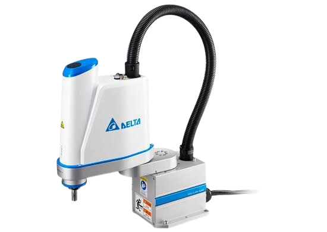

Robô SCARA
Sigla para Selective Compliance Assembly Robot Arm: dois eixos rotativos horizontais e paralelos movem o efetuador em um plano, enquanto um eixo linear (Z) controla a altura — resultando em ciclos muito rápidos para tarefas leves.
01 Conceito
O SCARA é otimizado para movimentos rápidos em um plano horizontal, com alta rigidez vertical e certa complacência (flexibilidade) lateral — daí o nome 'complacência seletiva'. Essa característica facilita o encaixe de peças, como pinos em furos, durante a montagem.
02 Princípio de Funcionamento
Dois braços giram em torno de eixos verticais paralelos, posicionando o pulso no plano XY. Um terceiro eixo linear (Z) desce e sobe o efetuador, e um quarto eixo (R) frequentemente gira a ferramenta. A cinemática relativamente simples permite ciclos de trabalho muito curtos.
03 Características Técnicas
- Ciclos de trabalho muito rápidos para peças leves
- Alta precisão de repetibilidade
- Área de trabalho em formato de anel/setor circular
- Boa relação velocidade × carga útil
- Estrutura compacta, ocupa pouco espaço de chão
04 Aplicações Industriais
05 Integração com Automação e IoT
Controladores SCARA modernos se conectam via EtherCAT ou Modbus TCP a sistemas MES, permitindo rastreabilidade peça a peça e ajuste de parâmetros de processo (velocidade, força de inserção) em tempo real a partir de dados coletados na linha.
06 Modelos Comerciais
Série DRS
- Alcance: até 800 mm
- Repetibilidade: ±0,01 a 0,02 mm
- Comunicação: EtherCAT
Série T / G
- Ciclo padrão: menos de 0,4 s
- Carga útil: até 20 kg
- Controlador com visão integrada
Série YK
- Alcance: 350 a 1.000 mm
- Alta velocidade angular
- Uso extensivo em eletrônicos